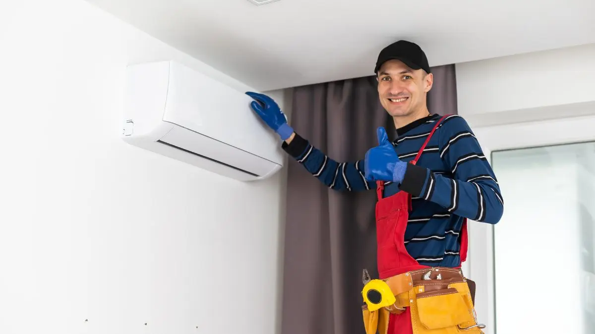
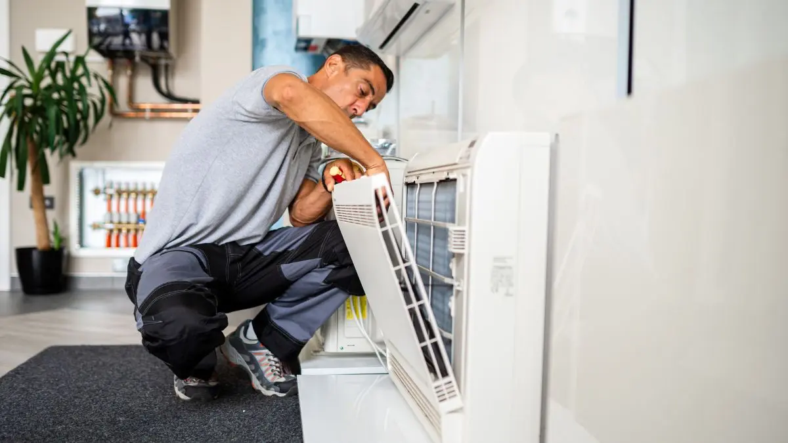

أفضل شركة تنظيف مكيفات بحي النرجس بالرياض 0559865517

إذا كنت تبحث عن شركة تنظيف مكيفات بحي النرجس بالرياض تضمن لك أعلى مستويات الكفاءة والجودة فإن شركة نقل الرياض هي الخيار المثالي لك حيث مع ارتفاع درجات الحرارة في الرياض يصبح الاعتماد على المكيفات أمر ضروري.
ولكن مع الاستخدام المتكرر تتراكم الأتربة والشوائب داخل وحدات التكييف مما يؤثر على أدائها ويزيد من استهلاك الكهرباء هنا تأتي أهمية خدمات التنظيف والصيانة الدورية التي تقدمها شركة صيانة مكيفات بحي النرجس بالرياض حيث توفر حلولًا متكاملة للحفاظ على كفاءة المكيفات وضمان تدفق هواء نقي وصحي.
يعتمد فريق العمل في شركة تنظيف مكيفات بحي النرجس بالرياض على أحدث المعدات والتقنيات لإزالة الأتربة والبكتيريا المتراكمة داخل المكيفات مما يضمن أداء مثالي وعمر افتراضيًا أطول للأجهزة.
كما أن خدمات الصيانة الدورية المقدمة من قبل شركة صيانة مكيفات بحي النرجس بالرياض تشمل فحص المكيفات واكتشاف أي أعطال محتملة وإصلاحها بسرعة وكفاءة مما يساعد على تجنب الأعطال المفاجئة التي قد تؤدي إلى توقف التبريد في أوقات الحاجة.
سواء كنت بحاجة إلى تنظيف شامل أو صيانة دورية فإن شركة نقل الرياض توفر لك الخدمة الأفضل للحفاظ على مكيفاتك في حالة مثالية.
للتواصل مع شركة نقل الرياض عبر 0559865517 ويمكنك مراسلتنا عبر الواتساب من خلال هذا الرابط.
إقرأ ايضا :شركة نقل الرياض لخدمات غسل مكيفات الرياض
نقل الرياض افضل شركة تنظيف مكيفات بحي النرجس بالرياض
نقل الرياض افضل شركة تنظيف مكيفات بحي النرجس بالرياض حيث تقدم خدمات متكاملة لضمان كفاءة المكيفات وتحسين أدائها مع مرور الوقت تتراكم الأتربة والشوائب داخل وحدات التكييف مما يؤثر سلبًا على تدفق الهواء وجودته ويزيد من استهلاك الكهرباء.
لذلك توفر شركة تنظيف مكيفات بحي النرجس بالرياض حلول احترافية لتنظيف جميع أنواع المكيفات باستخدام أحدث التقنيات والمعدات ويحرص فريق العمل المدرب في شركة صيانة مكيفات بحي النرجس بالرياض على تقديم خدمة دقيقة تشمل تنظيف الفلاتر وإزالة الرواسب المتراكمة داخل وحدات التبريد.
مما يساعد على تحسين كفاءة المكيف وإطالة عمره الافتراضي كما أن التنظيف الدوري يسهم في تقليل استهلاك الطاقة والحفاظ على هواء نقي وصحي داخل المنازل والمكاتب.
تقدم شركة تنظيف مكيفات بحي النرجس بالرياض خدماتها بأسعار تنافسية لضمان رضا العملاء وراحتهم وذلك من خلال تقديم باقات تنظيف شاملة تشمل التعقيم والتطهير بأفضل المواد الآمنة على البيئة والإنسان.
أهمية تنظيف المكيفات بحي النرجس
يُعد حي النرجس من الأحياء الحديثة والنشطة في شمال الرياض، ويشهد استخدامًا مكثفًا لأجهزة التكييف بسبب ارتفاع درجات الحرارة معظم أيام السنة. ومع تكرار التشغيل، تتراكم الأتربة والبكتيريا داخل المكيفات مما يؤدي إلى ضعف التبريد وزيادة استهلاك الكهرباء. لذلك، يُنصح سكان حي النرجس بإجراء تنظيف دوري للمكيفات للحفاظ على كفاءتها وضمان جو صحي داخل المنزل.
المشاكل الناتجة عن إهمال تنظيف المكيف
عدم تنظيف المكيفات بشكل منتظم يمكن أن يؤدي إلى عدة مشاكل، مثل خروج روائح كريهة، أو تسرب المياه، أو حتى تعطل كامل للجهاز. كما أن تراكم الغبار داخل المكيف قد يسبب مشاكل تنفسية خاصةً لمن يعانون من الحساسية أو الربو. ولهذا فإن تنظيف الفلاتر والمراوح والمجاري الهوائية بشكل دوري يُعد أمرًا ضروريًا للحفاظ على بيئة منزلية صحية وآمنة.
أفضل وقت لتنظيف المكيفات في حي النرجس
يفضل سكان حي النرجس إجراء تنظيف المكيفات في بداية فصل الصيف، قبل بدء موسم الاستخدام المكثف. هذه الخطوة تساعد في تجنب الأعطال المفاجئة، وتُطيل من عمر المكيف. كما يُستحسن تكرار عملية التنظيف مرة ثانية خلال نهاية الصيف لضمان بقاء الجهاز في حالة جيدة واستعداده لفصل الشتاء أو للصيف التالي.
إقرأ ايضا : افضل شركة تنظيف مكيفات بالرياض 0559865517 وبالمملكة العربيه السعودية
نقل الرياض خيارك الأول
إلى جانب ذلك توفر شركة صيانة مكيفات بحي النرجس بالرياض خدمات الفحص الشامل للمكيفات لاكتشاف أي مشكلات مبكرًا ومعالجتها قبل أن تتفاقم مما يوفر الوقت والتكاليف على العملاء بفضل الاعتماد على كوادر فنية محترفة.
تضمن الشركة تقديم أعلى مستويات الجودة في كل عملية تنظيف أو صيانة مما يجعلها الخيار الأول لكل من يبحث عن خدمة موثوقة وفعالة في مجال تنظيف المكيفات.
كما توفر الشركة خدماتها لجميع أنواع المكيفات سواء كانت سبليت أو شباك أو مركزية مما يجعلها الخيار المثالي لمن يحتاج إلى حلول متكاملة لصيانة أجهزة التكييف.
يعمل فريق شركة تنظيف مكيفات بحي النرجس بالرياض وفق أعلى معايير الجودة والاحترافية لضمان تحقيق أفضل النتائج في كل مرة كما تعتمد شركة صيانة مكيفات بحي النرجس بالرياض على معدات متطورة تساهم في تنظيف المكيفات بكفاءة عالية.
وتضمن إعادة تشغيلها بأفضل أداء مما يوفر بيئة داخلية مريحة وصحية للعملاء لهذا السبب تعتبر شركة نقل الرياض الخيار الأمثل لمن يبحث عن خدمات تنظيف وصيانة مكيفات احترافية في حي النرجس بالرياض.
كيف تتم عملية تنظيف المكيفات في نقل الرياض
تتم عملية تنظيف المكيفات في نقل الرياض وفق خطوات مدروسة تضمن أعلى مستويات الكفاءة والجودة حيث تعتمد شركة تنظيف مكيفات بحي النرجس بالرياض على أحدث التقنيات لإزالة الأتربة والرواسب التي تتراكم داخل وحدات التكييف وتؤثر على أدائها.
تبدأ عملية التنظيف بفحص شامل للمكيف للتأكد من حالته العامة ومعرفة ما إذا كان هناك أي أعطال تحتاج إلى صيانة بعد ذلك يقوم فريق العمل المحترف في شركة صيانة مكيفات بحي النرجس بالرياض بفك الفلاتر وتنظيفها جيدًا لإزالة الغبار المتراكم.
والذي قد يؤدي إلى انسداد مجاري الهواء وتقليل كفاءة التبريد ثم يتم تنظيف ملفات التبريد والمبخر باستخدام مواد مخصصة تساعد على إزالة الأوساخ والبكتيريا التي تتراكم مع مرور الوقت وتؤثر على جودة الهواء الذي يخرج من المكيف.

اجهزة متطورة في التنظيف
كما تشمل العملية تنظيف المراوح الداخلية والخارجية للتأكد من عدم وجود أي عوائق تمنع تدفق الهواء بشكل طبيعي وتستخدم شركة تنظيف مكيفات بحي النرجس بالرياض أجهزة متطورة للبخار والتعقيم.
مما يساعد على التخلص من الجراثيم والروائح غير المرغوبة التي قد تنشأ بسبب تراكم الرطوبة داخل المكيف بعد الانتهاء من التنظيف يتم إعادة تركيب الفلاتر والأجزاء الداخلية والتأكد من أن جميع المكونات تعمل بكفاءة.
كما يقوم فريق شركة صيانة مكيفات بحي النرجس بالرياض بفحص مستوى غاز الفريون والتأكد من عدم وجود تسريبات تؤثر على قدرة التبريد وإذا لزم الأمر يتم تعبئة الغاز بمعدل مناسب لضمان أداء مثالي تهدف هذه العملية إلى تحسين كفاءة المكيف وتقليل استهلاك الكهرباء.
مما يضمن توفير بيئة مريحة وصحية للعملاء تعمل شركة تنظيف مكيفات بحي النرجس بالرياض على توفير خدماتها لكافة أنواع المكيفات سواء كانت سبليت أو شباك أو مركزية لضمان تلبية احتياجات جميع العملاء.
كما تحرص شركة صيانة مكيفات بحي النرجس بالرياض على تنفيذ عمليات التنظيف والصيانة وفق أعلى معايير الجودة مما يساعد في الحفاظ على عمر المكيفات ويجنب العملاء الحاجة إلى عمليات الإصلاح المتكررة.
لهذا السبب تعتبر نقل الرياض الخيار الأفضل لكل من يبحث عن خدمات تنظيف مكيفات احترافية بحي النرجس في الرياض.
أنواع المكيفات وطرق تنظيفها
في حي النرجس، تتنوع أنواع المكيفات المستخدمة ما بين مكيفات الشباك، والمكيفات السبليت، والمكيفات المركزية في الفلل الكبيرة. كل نوع منها يحتاج إلى طريقة تنظيف مختلفة، فمثلًا المكيف السبليت يحتاج لفك الوحدة الداخلية وتنظيف الفلاتر والمبخر بدقة، بينما المكيف المركزي يتطلب تنظيف مجاري الهواء بالكامل. فهم طريقة التنظيف المناسبة لكل نوع مهم للحفاظ على الأداء القوي للمكيف.
أدوات تنظيف المكيفات المنزلية
بعض سكان حي النرجس يفضلون تنظيف المكيف بأنفسهم بين فترة وأخرى، ويستخدمون أدوات بسيطة مثل فرشاة ناعمة، ومكنسة كهربائية صغيرة، ومنظفات مخصصة للفلاتر. ومع ذلك، يبقى التنظيف العميق من المهام التي تتطلب خبرة، خصوصًا عند التعامل مع المراوح الداخلية أو تسربات المياه، ولذلك يُفضل الاستعانة بمتخصصين عند الحاجة.
دور التنظيف في تقليل استهلاك الكهرباء
من الفوائد المهمة لتنظيف المكيفات في حي النرجس هو تقليل استهلاك الكهرباء. عندما يكون المكيف نظيفًا من الداخل، لا يضطر للعمل بطاقة زائدة لتبريد الهواء، مما ينعكس مباشرة على فاتورة الكهرباء. ومع استمرار الارتفاع في درجات الحرارة خلال الصيف، تصبح هذه النقطة ضرورية لكل من يسعى لتقليل النفقات الشهرية دون التأثير على الراحة.

شركة صيانة مكيفات بحي النرجس بالرياض
إذا كنت تبحث عن شركة صيانة مكيفات بحي النرجس بالرياض تضمن لك أعلى مستويات الجودة والكفاءة فإن شركة نقل الرياض هي الخيار المثالي لك.
نحن نقدم خدمات صيانة وتنظيف مكيفات متكاملة لضمان أنظمة تبريد تعمل بأفضل أداء على مدار العام مع ارتفاع درجات الحرارة في الرياض لا يمكنك المجازفة بمكيفات غير نظيفة أو ضعيفة الأداء لذلك نحرص في شركة تنظيف مكيفات بحي النرجس بالرياض على تقديم حلول احترافية للحفاظ على أجهزتك.
فريق العمل لدينا مدرب على أحدث تقنيات الصيانة والتنظيف ويستخدم معدات متطورة لإزالة الأتربة والرواسب من الفلاتر والمراوح وملفات التبريد مما يعزز من كفاءة التبريد ويطيل عمر المكيفات.
بالإضافة إلى ذلك نقدم في شركة صيانة مكيفات بحي النرجس بالرياض خدمات فحص وصيانة شاملة للكشف عن أي أعطال غير مرئية ومعالجتها قبل أن تتفاقم مما يوفر عليك تكاليف الإصلاح المستقبلية.
نعمل في شركة تنظيف مكيفات بحي النرجس بالرياض على توفير خدمات احترافية تشمل تعبئة غاز الفريون وفحص ضغط التبريد والتأكد من عدم وجود أي تسريبات قد تؤثر على أداء المكيف كما نقدم خدمات تعقيم متقدمة تضمن لك بيئة داخلية صحية وهواء نقي خالي من الملوثات والجراثيم.
نتميز بسرعة الاستجابة والأسعار التنافسية التي تجعلنا الخيار الأول لكل من يبحث عن شركة صيانة مكيفات بحي النرجس بالرياض تضمن له راحة البال مع خدمة عملاء متوفرة دائمًا لضمان تلبية احتياجاتك بأفضل طريقة.
إذا كنت تريد مكيفات تعمل بكفاءة عالية وتدوم طويلاً فلا تتردد في الاعتماد على شركة نقل الرياض لضمان صيانة وتنظيف احترافي لمكيفاتك في حي النرجس بالرياض.
للتواصل مع شركة نقل الرياض عبر 0559865517 ويمكنك مراسلتنا عبر الواتساب من خلال هذا الرابط.
الأسئلة الشائعة حول تنظيف المكيفات بحي النرجس – الرياض
1. كل كم مرة يجب تنظيف المكيف؟
يفضل تنظيف المكيفات مرة كل 3 إلى 6 أشهر حسب درجة الاستخدام،
وفي أوقات الذروة مثل فصل الصيف، من الأفضل إجراء التنظيف مرتين لضمان الأداء المثالي.
2. هل يمكنني تنظيف المكيف بنفسي؟
نعم، يمكنك تنظيف الفلاتر والمراوح السطحية بنفسك باستخدام
أدوات بسيطة، لكن التنظيف العميق للأجزاء الداخلية، مثل المبخر والمكثف، من الأفضل أن يقوم به مختص لتفادي تلف
الجهاز.
3. ما العلامات التي تدل على أن المكيف يحتاج إلى تنظيف؟
من أبرز العلامات: ضعف التبريد، خروج
روائح غير مرغوبة، ارتفاع صوت الجهاز، أو تسرب مياه. إذا لاحظت أي من هذه الأعراض، فغالبًا المكيف يحتاج إلى تنظيف
عاجل.
4. هل يؤثر إهمال تنظيف المكيف على الصحة؟
نعم، تراكم الأتربة والبكتيريا داخل المكيف يمكن أن
يؤدي إلى مشاكل تنفسية، خاصة للأطفال وكبار السن أو من يعانون من الحساسية والربو.
5. هل تنظيف المكيف يساعد على تقليل فاتورة الكهرباء؟
بالتأكيد. المكيف النظيف يعمل بكفاءة
أعلى ويستهلك كهرباء أقل، مما يساعد في خفض الفاتورة الشهرية بشكل ملحوظ.